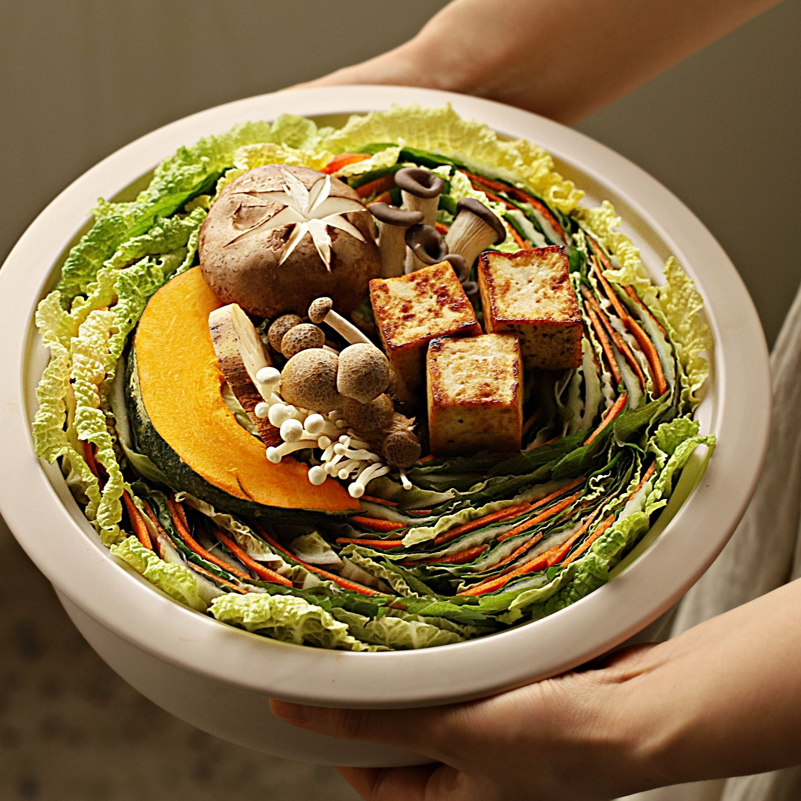

채소 전골
이번 연말 저녁은 과다한 지방 섭취를 줄인 깔끔한 채소 전골을 준비해보세요.
채소와 다시마가 우러난 전골의 따듯하고 담백한 맛이 한층 더 훈훈한 연말 분위기를 내줄거예요.

기본 재료 : 4인분 기준
- 알배추 1포기
- 깻잎 100g
- 청경채 200g
- 느타리버섯 100g
- 팽이버섯 50g
- 표고버섯 2개
- 당근 2개
- 두부 1모 (300g)
- 연근 1토막 (30g)
- 단호박 1/6개
- 유뷰 6장
- 실곤약 100g (생략가능)
소스 재료 : 4인분 기준
- 양파 1/3개
- 맛술 1큰술
- 간장 2큰술
- 레몬즙 또는 식초 1큰술
- 비정제 설탕 1큰술
조리 과정
- 1. 표고버섯은 젖은 키친타월로 가볍게 닦아주세요. 표고버섯의 윗부분을 칼로 조각을 내어 주고 느타리버섯과 팽이버섯은 밑동을 잘라 먹기 좋게 찢어주세요.
- 2. 연근과 단호박은 먹기 좋게 슬라이스 해주세요. 당근은 감자칼로 얇게 슬라이스 해주세요. 소스 재료의 양파는 얇게 채 썰어 찬물에 담가 매운기를 제거해 주세요.
- 3. 깨끗이 씻은 청경채는 잎을 떼어내 주세요.
- 4. 깨끗이 씻은 배춧잎과 깻잎을 겹친 후 얇게 슬라이스한 당근을 올려주세요.4~5회 반복해서 쌓은 후 4등분 해주세요.(tip. 사용할 전골냄비 높이에 맞춰서 잘라주세요)
- 5. 전골 냄비에 청경채를 깔고 겹친 채소를 가지런히 둘러 담아주세요.
- 6. 버섯과 연근, 단호박을 올리고 육수를 부어주세요. 국물 양념 재료를 넣고 5분간 끓여주세요. 소스에 찍어 맛있게 즐겨주세요.(tip. 전골에 유부와 실 곤약 등을 넣어 더욱 풍성하게 즐겨보세요) (tip. 부족한 간은 소금으로 해주세요)